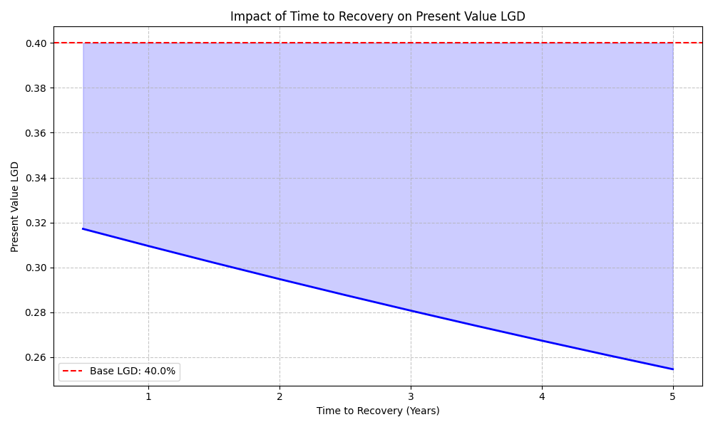
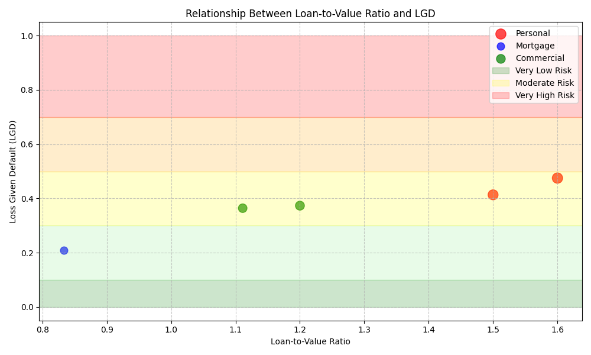
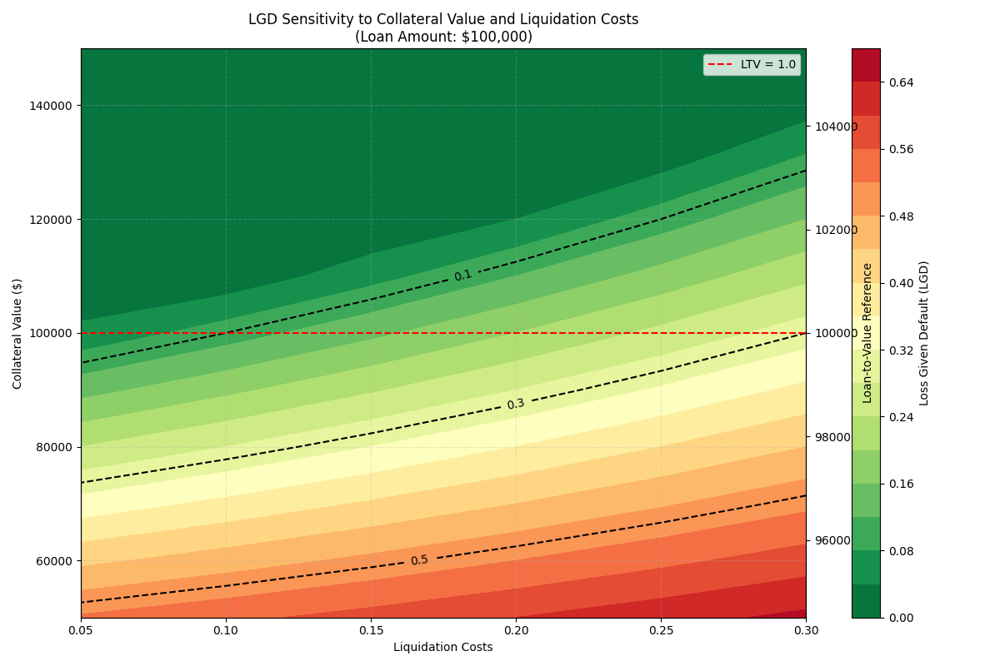

Loss Given Default (LGD)
Loss Given Default (LGD) is a key component in credit risk modeling that estimates the portion of an exposure that is lost when a borrower defaults. It's a critical parameter in calculating expected credit losses and pricing loans.
Overview
The LGD estimation in Pypulate considers:
- Collateral value and liquidation costs
- Loan amount and loan-to-value ratio
- Historical recovery rates (if available)
- Time value of money
The model provides both a point-in-time LGD estimate and a present value calculation that accounts for the time to recovery.
Usage
from pypulate.credit import loss_given_default
# Basic usage with collateral
result = loss_given_default(
collateral_value=80000, # Value of collateral
loan_amount=100000, # Outstanding loan amount
liquidation_costs=0.15, # Costs to liquidate collateral (15%)
time_to_recovery=1.5 # Expected time to recovery in years
)
# With historical recovery rate
result = loss_given_default(
collateral_value=80000,
loan_amount=100000,
recovery_rate=0.6, # Historical recovery rate for similar loans
liquidation_costs=0.15,
time_to_recovery=1.5
)
# Access results
lgd = result["lgd"]
present_value_lgd = result["present_value_lgd"]
risk_level = result["risk_level"]
components = result["components"]
Parameters
| Parameter | Type | Description | Default |
|---|---|---|---|
collateral_value |
float | Value of collateral | Required |
loan_amount |
float | Outstanding loan amount | Required |
recovery_rate |
float, optional | Historical recovery rate for similar loans | None |
liquidation_costs |
float | Costs associated with liquidating collateral (as a decimal) | 0.1 (10%) |
time_to_recovery |
float | Expected time to recovery in years | 1.0 |
Return Value
The function returns a dictionary with the following keys:
| Key | Type | Description |
|---|---|---|
lgd |
float | Loss given default estimate |
present_value_lgd |
float | Present value of LGD accounting for time to recovery |
risk_level |
str | Risk level categorization ("Very Low", "Low", "Moderate", "High", "Very High") |
components |
dict | Dictionary containing calculation components |
The components dictionary includes:
collateral_value: Original collateral valuenet_collateral_value: Collateral value after liquidation costsloan_amount: Outstanding loan amountloan_to_value: Loan-to-value ratiocollateral_lgd: LGD based solely on collateraltime_value_factor: Discount factor for time value of money
If a recovery rate is provided, additional components are included:
recovery_rate: Historical recovery rateweight_collateral: Weight assigned to collateral-based LGDweight_historical: Weight assigned to historical recovery rate
Risk Level Classification
The LGD estimate is categorized into risk levels:
| LGD Range | Risk Level |
|---|---|
| < 0.1 (10%) | Very Low |
| 0.1 - 0.3 (10-30%) | Low |
| 0.3 - 0.5 (30-50%) | Moderate |
| 0.5 - 0.7 (50-70%) | High |
| > 0.7 (70%) | Very High |
Comprehensive Example
Here's a complete example demonstrating how to calculate and analyze LGD for different loan scenarios using only matplotlib and numpy:
from pypulate.credit import loss_given_default
import matplotlib.pyplot as plt
import numpy as np
# Define sample loan data
loan_ids = [1, 2, 3, 4, 5]
loan_amounts = [100000, 200000, 150000, 300000, 80000]
collateral_values = [120000, 180000, 100000, 250000, 50000]
recovery_rates = [0.65, 0.55, None, 0.6, 0.5]
liquidation_costs = [0.1, 0.15, 0.12, 0.2, 0.1]
time_to_recovery = [1.0, 1.5, 1.0, 2.0, 1.0]
loan_types = ['Mortgage', 'Commercial', 'Personal', 'Commercial', 'Personal']
# Calculate LGD for each loan
lgd_values = []
pv_lgd_values = []
risk_levels = []
ltv_values = []
collateral_lgd_values = []
weight_collateral_values = []
weight_historical_values = []
time_value_factors = []
for i in range(len(loan_ids)):
lgd_result = loss_given_default(
collateral_value=collateral_values[i],
loan_amount=loan_amounts[i],
recovery_rate=recovery_rates[i],
liquidation_costs=liquidation_costs[i],
time_to_recovery=time_to_recovery[i]
)
# Extract results
lgd_values.append(lgd_result['lgd'])
pv_lgd_values.append(lgd_result['present_value_lgd'])
risk_levels.append(lgd_result['risk_level'])
# Extract components
components = lgd_result['components']
ltv_values.append(components['loan_to_value'])
collateral_lgd_values.append(components.get('collateral_lgd', 0))
weight_collateral_values.append(components.get('weight_collateral', 1.0) if 'weight_collateral' in components else 1.0)
weight_historical_values.append(components.get('weight_historical', 0.0) if 'weight_historical' in components else 0.0)
time_value_factors.append(components['time_value_factor'])
# Print the results
print("Loss Given Default Analysis")
print("===========================")
print("Loan ID | Loan Type | LGD | Present Value LGD | Risk Level")
print("--------|-------------|---------|------------------|------------")
for i in range(len(loan_ids)):
print(f"{loan_ids[i]:7d} | {loan_types[i]:<11s} | {lgd_values[i]:.6f} | {pv_lgd_values[i]:.6f} | {risk_levels[i]}")
# Calculate expected loss for each loan (assuming PD = 0.05 for all loans)
pd_value = 0.05 # 5% probability of default
expected_losses = [pd_value * loan_amounts[i] * lgd_values[i] for i in range(len(loan_ids))]
# Print expected loss
print("\nExpected Loss Analysis (PD = 5%)")
print("================================")
for i in range(len(loan_ids)):
print(f"Loan {loan_ids[i]} ({loan_types[i]}): ${expected_losses[i]:.2f}")
# Visualize LGD by loan type
plt.figure(figsize=(10, 6))
# Group by loan type
unique_loan_types = list(set(loan_types))
loan_type_indices = {loan_type: [] for loan_type in unique_loan_types}
for i, loan_type in enumerate(loan_types):
loan_type_indices[loan_type].append(i)
# Calculate average LGD by loan type
loan_type_avg_lgd = []
for loan_type in unique_loan_types:
indices = loan_type_indices[loan_type]
avg_lgd = sum(lgd_values[i] for i in indices) / len(indices)
loan_type_avg_lgd.append(avg_lgd)
# Create bar chart
plt.bar(unique_loan_types, loan_type_avg_lgd, color=['#1f77b4', '#ff7f0e', '#2ca02c'])
plt.title('Average LGD by Loan Type')
plt.xlabel('Loan Type')
plt.ylabel('Loss Given Default (LGD)')
plt.grid(axis='y', linestyle='--', alpha=0.7)
plt.tight_layout()
plt.show()
# Visualize the relationship between LTV and LGD
plt.figure(figsize=(10, 6))
# Create scatter plot with different colors for loan types
colors = {'Mortgage': 'blue', 'Commercial': 'green', 'Personal': 'red'}
for loan_type in unique_loan_types:
indices = loan_type_indices[loan_type]
x = [ltv_values[i] for i in indices]
y = [lgd_values[i] for i in indices]
sizes = [ltv_values[i] * 100 for i in indices] # Size proportional to LTV
plt.scatter(x, y, s=sizes, c=colors[loan_type], alpha=0.7, label=loan_type)
plt.title('Relationship Between Loan-to-Value Ratio and LGD')
plt.xlabel('Loan-to-Value Ratio')
plt.ylabel('Loss Given Default (LGD)')
plt.grid(True, linestyle='--', alpha=0.7)
# Add risk level regions
plt.axhspan(0, 0.1, alpha=0.2, color='green', label='Very Low Risk')
plt.axhspan(0.1, 0.3, alpha=0.2, color='lightgreen')
plt.axhspan(0.3, 0.5, alpha=0.2, color='yellow', label='Moderate Risk')
plt.axhspan(0.5, 0.7, alpha=0.2, color='orange')
plt.axhspan(0.7, 1.0, alpha=0.2, color='red', label='Very High Risk')
plt.legend()
plt.tight_layout()
plt.show()
# Create a sensitivity analysis for collateral value and liquidation costs
# For a fixed loan amount of $100,000
loan_amount = 100000
collateral_values_array = np.linspace(50000, 150000, 11) # 50% to 150% of loan amount
liquidation_costs_array = np.linspace(0.05, 0.3, 6) # 5% to 30%
# Create matrices to store LGD values
lgd_matrix = np.zeros((len(collateral_values_array), len(liquidation_costs_array)))
ltv_array = np.zeros(len(collateral_values_array))
# Calculate LGD for each combination
for i, collateral in enumerate(collateral_values_array):
ltv_array[i] = loan_amount / collateral
for j, cost in enumerate(liquidation_costs_array):
result = loss_given_default(
collateral_value=collateral,
loan_amount=loan_amount,
liquidation_costs=cost
)
lgd_matrix[i, j] = result['lgd']
# Create a heatmap
plt.figure(figsize=(12, 8))
X, Y = np.meshgrid(liquidation_costs_array, collateral_values_array)
contour = plt.contourf(X, Y, lgd_matrix, levels=20, cmap='RdYlGn_r')
plt.colorbar(contour, label='Loss Given Default (LGD)')
# Add contour lines
contour_lines = plt.contour(X, Y, lgd_matrix, levels=[0.1, 0.3, 0.5, 0.7],
colors='black', linestyles='dashed')
plt.clabel(contour_lines, inline=True, fontsize=10)
# Add labels and title
plt.xlabel('Liquidation Costs')
plt.ylabel('Collateral Value ($)')
plt.title('LGD Sensitivity to Collateral Value and Liquidation Costs\n(Loan Amount: $100,000)')
plt.grid(True, linestyle='--', alpha=0.3)
# Add LTV reference line
ax2 = plt.twinx()
ax2.plot(liquidation_costs_array, [100000] * len(liquidation_costs_array), 'r--', label='LTV = 1.0')
ax2.set_ylabel('Loan-to-Value Reference')
ax2.set_ylim(plt.ylim())
ax2.legend(loc='upper right')
plt.tight_layout()
plt.show()
# Analyze the impact of time to recovery on present value LGD
time_values_array = np.linspace(0.5, 5, 10) # 0.5 to 5 years
lgd_base = 0.4 # Base LGD of 40%
pv_lgd_array = []
for time in time_values_array:
result = loss_given_default(
collateral_value=75000,
loan_amount=100000,
time_to_recovery=time
)
pv_lgd_array.append(result['present_value_lgd'])
# Plot the time value effect
plt.figure(figsize=(10, 6))
plt.plot(time_values_array, pv_lgd_array, 'b-', linewidth=2)
plt.axhline(y=lgd_base, color='r', linestyle='--', label=f'Base LGD: {lgd_base:.1%}')
plt.fill_between(time_values_array, pv_lgd_array, lgd_base, alpha=0.2, color='blue')
plt.title('Impact of Time to Recovery on Present Value LGD')
plt.xlabel('Time to Recovery (Years)')
plt.ylabel('Present Value LGD')
plt.grid(True, linestyle='--', alpha=0.7)
plt.legend()
plt.tight_layout()
plt.show()
# Compare collateral-based LGD vs. recovery rate-based LGD
recovery_rates_array = np.linspace(0.3, 0.9, 7)
collateral_values_list = [60000, 80000, 100000, 120000] # 60% to 120% of loan amount
loan_amount = 100000
liquidation_cost = 0.15
plt.figure(figsize=(12, 8))
for collateral in collateral_values_list:
lgd_list = []
for recovery in recovery_rates_array:
result = loss_given_default(
collateral_value=collateral,
loan_amount=loan_amount,
recovery_rate=recovery,
liquidation_costs=liquidation_cost
)
lgd_list.append(result['lgd'])
ltv = loan_amount / collateral
plt.plot(recovery_rates_array, lgd_list, marker='o', linewidth=2,
label=f'Collateral: ${collateral:,} (LTV: {ltv:.2f})')
plt.title('LGD vs. Recovery Rate for Different Collateral Values')
plt.xlabel('Historical Recovery Rate')
plt.ylabel('Loss Given Default (LGD)')
plt.grid(True, linestyle='--', alpha=0.7)
plt.legend()
plt.tight_layout()
plt.show()
Example Output
The above code will produce a detailed analysis of LGD across different loan scenarios, including:
Loss Given Default Analysis
===========================
Loan ID | Loan Type | LGD | Present Value LGD | Risk Level
--------|-------------|---------|------------------|------------
1 | Mortgage | 0.210000 | 0.200000 | Low
2 | Commercial | 0.364000 | 0.338312 | Moderate
3 | Personal | 0.413333 | 0.393651 | Moderate
4 | Commercial | 0.373333 | 0.338624 | Moderate
5 | Personal | 0.475000 | 0.452381 | Moderate
Expected Loss Analysis (PD = 5%)
================================
Loan 1 (Mortgage): $1050.00
Loan 2 (Commercial): $3640.00
Loan 3 (Personal): $3100.00
Loan 4 (Commercial): $5600.00
Loan 5 (Personal): $1900.00
Visualizations
Impact of Time to Recovery
This visualization shows how the time to recovery affects the present value of LGD. As the time to recovery increases, the present value of LGD decreases due to the time value of money, even though the nominal LGD remains constant.

Relationship Between Loan-to-Value Ratio and LGD
This scatter plot illustrates the relationship between the loan-to-value ratio and LGD for different loan types. Higher LTV ratios generally correspond to higher LGD values. The background is color-coded to indicate different risk level regions.

LGD Sensitivity
This heatmap demonstrates how LGD changes with different combinations of collateral value and liquidation costs, helping to visualize the sensitivity of LGD to these two key parameters. The contour lines represent different LGD levels.

Key Insights
From the comprehensive analysis, several key insights emerge:
-
Loan-to-Value (LTV) Ratio: As LTV increases, LGD typically increases. Loans with LTV < 1.0 (where collateral exceeds loan amount) have lower LGD.
-
Liquidation Costs: Higher liquidation costs significantly increase LGD, especially for loans with LTV close to 1.0.
-
Recovery Rates: Historical recovery rates can provide valuable information to complement collateral-based LGD estimates.
-
Time Value Effect: Longer recovery times reduce the present value of LGD but increase uncertainty.
-
Risk Segmentation: LGD varies by loan type, with secured loans like mortgages typically having lower LGD than personal loans.
Notes
- The LGD is expressed as a decimal between 0 and 1, where 0 means full recovery and 1 means total loss.
- The model assumes a fixed discount rate of 5% for present value calculations.
- When collateral value exceeds the loan amount (after liquidation costs), the collateral-based LGD is 0.
- The weighting between collateral-based LGD and historical recovery rates depends on the loan-to-value ratio.